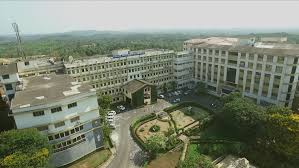

Welcome to Department of Computer and Communication Engineering,
-
-


We Specialize in
- Computer Communication Technologies & Telecommunications
- Programme is on Computer Networks
- Telecommunications technologies
Program's we offer
- Courses in Computer Science
- Cloud Computing
- Multimedia Communications
- Big Data Analytics


We Provide Experiential learning in
- Security and associated subjects
- Computer science
- Communication networks
The Principal's Message
"Genius is one percent inspiration and ninety-nine percent perspiration."
College Mission
- To develop NMAM Institute of Technology, Nitte, as Center of Excellence by imparting Quality Education to generate Competent, Skilled and Humane Manpower to face emerging Scientific, Technological, Managerial and Social Challenges with Credibility, Integrity, Ethics and Social Concern

College Vision
- Pursuing Excellence, Empowering people, Partnering in Community Development